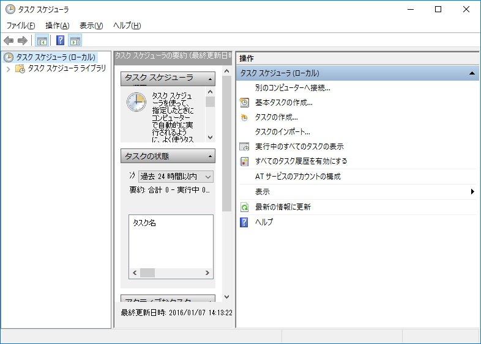
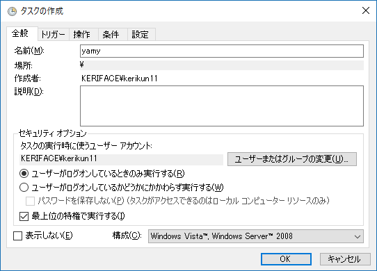
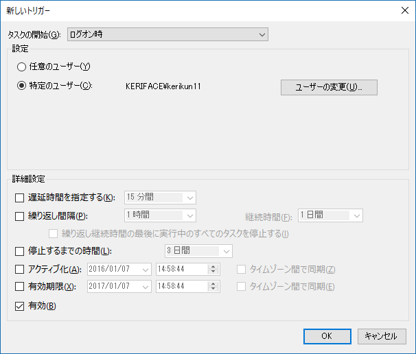
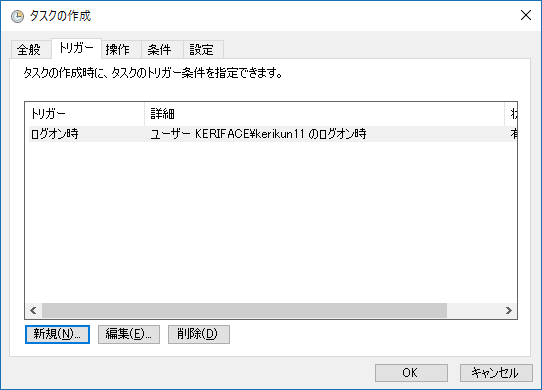
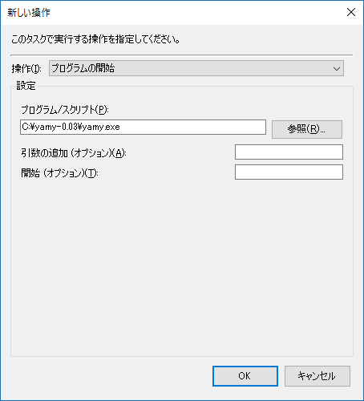
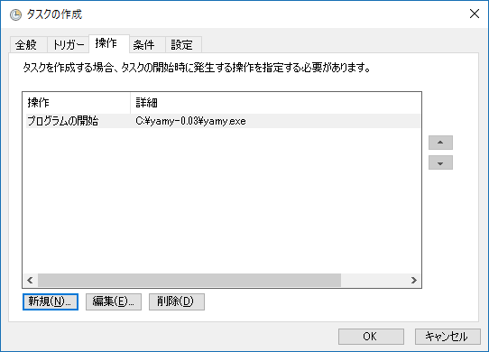
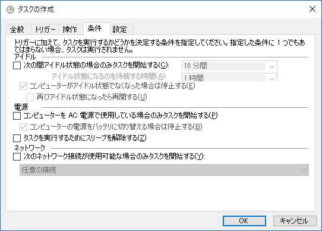
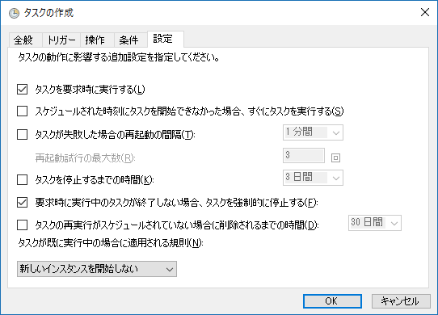
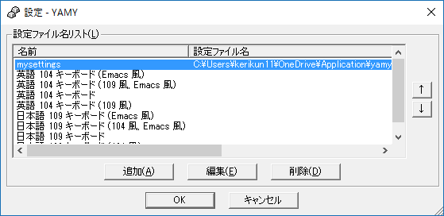
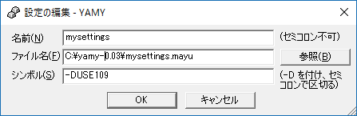

yamyでキーボードをカスタマイズ
概要
Windowsのキーボードをカスタマイズして使いやすくする。
CapsキーをCtrlキーにする
WindowのPCはCtrlキーの位置が小指から遠く押しづらい！
ということで、Capsの位置にCtrlキーを置く。
ちなみに、もともとCtrlがあったところにもCapsを置くこともできる。
半角/全角を切り替えではなく、決めうちにする
日本語を入力したくて半角/全角キーを押したら、英語で入力されてイラッとすることがある。
そこで、普段使わない変換キーを日本語切り替えに、無変換キーを英語切り替えにする。
Vimユーザー必見！
Vimで日本語を入力をしたとき、保存などをしようと:wと打つと、それが全角で入力されて困ることがある。
そこで、インサートモードからノーマルモードに入ると自動的に日本語をオフにして英語入力にする
今回用いた方法
キー割り当てを変えるには以下のような方法がある。
- Windowsの
レジストリを書き換える。（玄人向け） Ctrl2Cap.exeというアプリを使う。（機能が少ない）yamy.exeというアプリを使う。(便利)
今回はyamyという便利なアプリを使う。
yamyインストール方法
概要
yamyはインストールをする必要がない。zip形式でダウンロードして解凍して、yamy.exeを起動するだけ！！（ただし、後述の設定が必要です。）
1. ダウンロード
yamyダウンロードページからzipファイルをダウンロードする。
執筆時点の最新バージョンは0.03。
2. 解凍&配置
あとで起動時に自動起動するように設定するので、わかりやすいところに置いておくとよい。例えば、Cドライブ直下など。
3. PC起動時に自動で起動するように設定
Windows10の場合を説明する。下に設定中の画像が貼り付けてあるので参照のこと。
- スタートメニューで
タスクスケジューラを起動する(検索するとよい)。 - 右のほうの
タスクを作成をクリック。 全般タグでは、 1. 名前をyamyとする。 2.最上位の特権で実行するにチェックする。トリガータブでは、新規→ 1. タスクの開始：ログオン時にする。 2. 設定：特定のユーザーで自分だけにする。操作タブでは、新規→ 1. 操作：プログラムの開始2. プログラム/スクリプト：参照からyamy.exeのパスを設定する。条件タブでは、コンピュータをAC電源で使用している場合のみ...のチェックを外す。設定タブでは、タスクを要求時に実行すると要求時に実行中のタスクが終了しない場合、タスクを強制的に停止するのみにチェック。他は外す。- OKを押して終了。
再起動すると、タスクバーにアイコンが現れる。
参考画像








yamyの設定
オリジナルの設定ファイルを作成
yamy.exeのあるフォルダ内にmysettings.mayuなど適当なテキストファイルを作成する。
設定を書く
さっき作ったmysettings.mayuの中に以下を書く。
include "109.mayu"
keymap Global
# My Settings
# ひらがなで 右クリックメニュー
key *ひらがな = &Ignore
key *ひらがな = S-*F10
key *E0ひらがな = &Ignore
key *E0ひらがな = S-*F10
# 変換で IME-ON
key *変換 = &Ignore
key *IC-~IL-変換 = $ToggleIME
# 無変換で IME-OFF
key *無変換 = &Ignore
key *IC-IL-無変換 = $ToggleIME
key *E0無変換 = &Ignore
key *IC-IL-E0無変換 = $ToggleIME
# Caps/英数で Ctrl
mod Control += 英数
key *英数 = *LControl
mod Control += E0英数
key *E0英数 = *LControl
# For Cygwin
window Cygwin /cygwin/ : Global
key A-v = RButton # Paste
key IL-~IC-Esc = $ToggleIME Esc
key IC-Esc = Esc
key IL-*IC-C-LeftSquareBracket = Esc $ToggleIME Esc
次に、同じフォルダ内にあるyamy.iniテキストエディタで開いて、下のほうの
escapeNLSKeys=0
を
escapeNLSKeys=1
とする。
作った設定を読み込む
- タスクバーのアイコンを右クリックして設定を開く。
- 追加ボタンを押す。
- 名前は適当なものを。ファイルは
mysettings.mayu。シンボルには-DUSE109と書く。 - OKを押して画面を閉じる。
 
任務完了
これで設定は完了。
あとは、自分でmysettingsにいろいろ書けば好きな割り当てができる。さらに、タスクバーのアイコンを右クリックして「調査」を開くと、実際にキーボードを押したときそのボタンが何に割り当てられているか教えてくれるので便利！
キーの名前は、同じディレクトリ内の109.mayuというファイルの中に書いてあるので、そこで確認できる。
参考サイト
参考にさせていただきました。ありがとうございます。